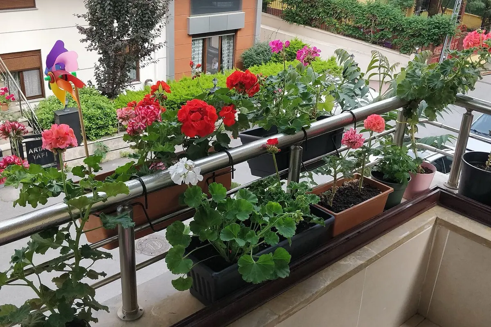
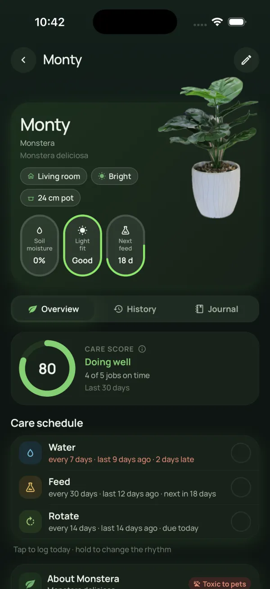
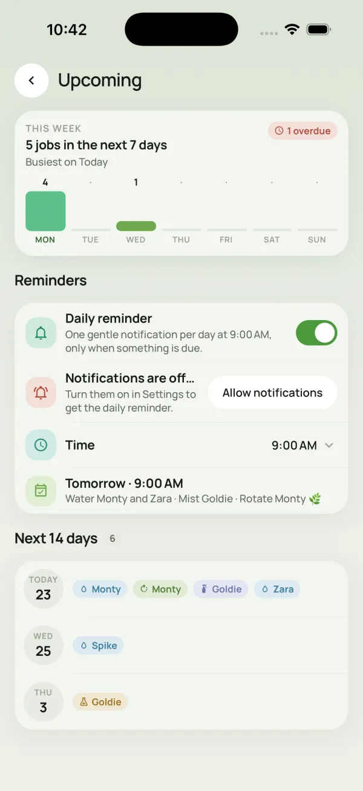

01 / 10
Morning on the balcony
Four pots need you today. The late ones come first, and each is done with one tap.
LeafPulse tells you which plants need water, feed, a mist or a turn today, and keeps a small journal as they grow.
LeafPulse does the remembering, so you can enjoy the green.


Pick it from 650 plants and its watering, light and feeding rhythm fills itself in.

One gentle reminder at the hour you choose, and the next few days at a glance.


The light meter reads a corner through your camera and says which plants will like it.


Short guides, a Leaf doctor for yellow leaves, and a journal for every new leaf.
Every pot on the railing gets a profile. Each morning LeafPulse tells you who's thirsty, who's hungry and who's happy where they are.
Photo: Neltharion, CC BY-SA 4.0, cropped
Photo: Ecoscapes, CC BY-SA 4.0, cropped


Open LeafPulse and see who needs you today: water, feed, mist or a turn, with the late ones first.
Real gardens, real plants. Step through a few moments and see what LeafPulse says about each one.
Basic looks after up to five plants. Premium is for when the collection grows, with a 7-day trial on the yearly plan.
What's in PremiumNothing to sign up for. Your plants, photos and notes live on your phone.
Today's jobs, reminders, guides and the Leaf doctor work without the internet.
Anonymous usage stats you can turn off in one tap. We never sell data. Privacy policy
Aphids, caterpillars and snails are crawling along the planters toward your houseplants. Plant a mister, a flytrap and a few marigolds, and keep every leaf safe for six waves.
Turn your phone sideways for a bigger garden
Six waves of pests
Pick a plant from the tray (or press 1 to 5), then tap a planter square. Misters spray, flytraps snap, marigolds block, rain barrels bring more drops.
Paused
LeafPulse is coming to the App Store and Google Play. Questions in the meantime? Write to us.